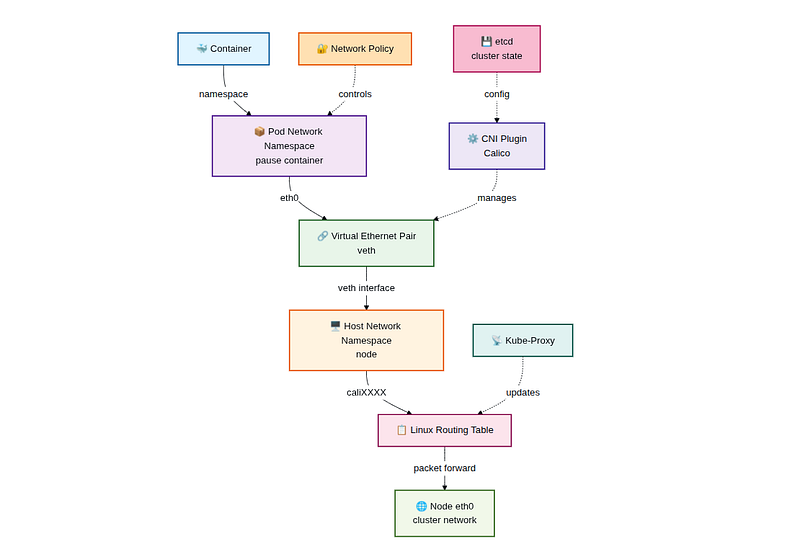
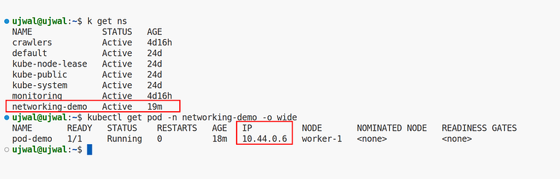
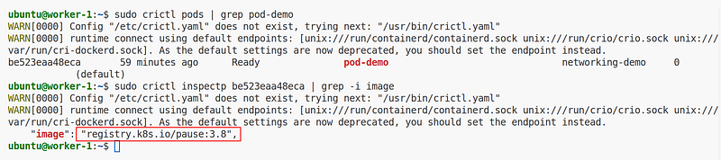
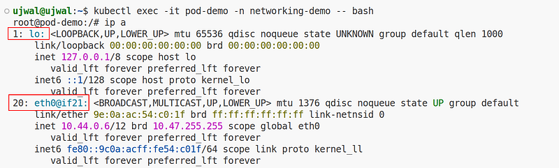
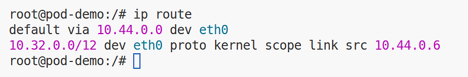
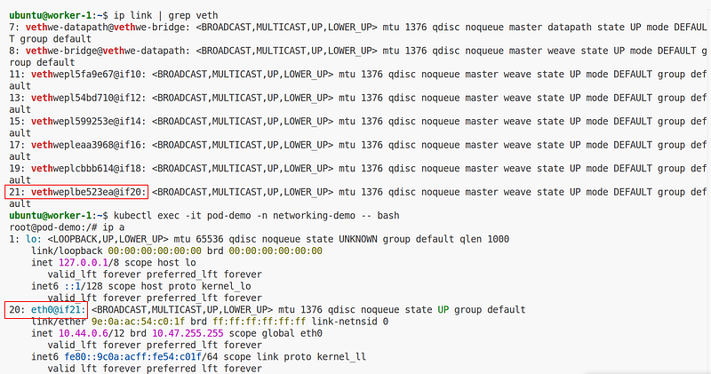
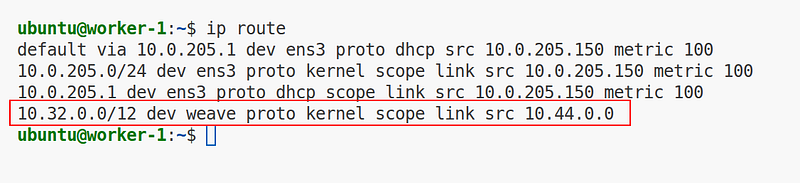
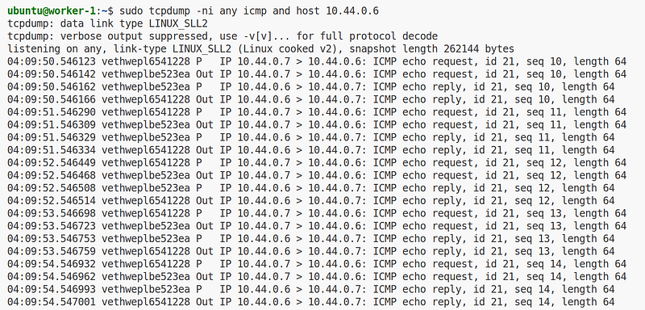
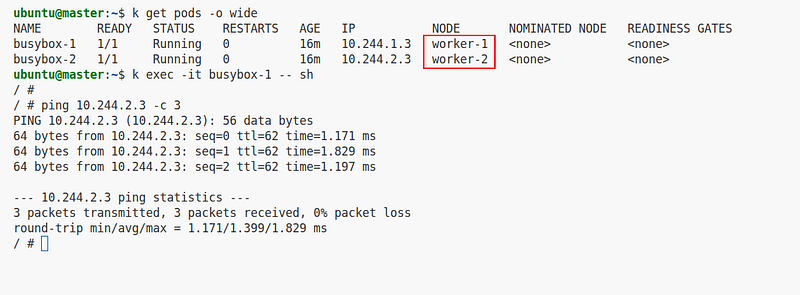
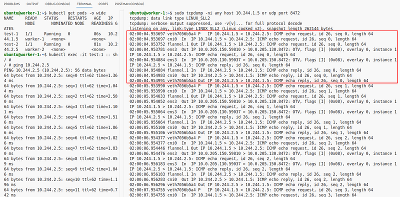

Kubernetes Pod-to-Pod Networking: Linux Primitives Deep Dive
9th February 2026
Kubernetes networking often feels abstract until you look at what actually exists inside a node. In reality, a pod is built from standard Linux networking primitives: network namespaces, virtual ethernet pairs, routing tables, and iptables rules.
This blog focuses on understanding real pod-to-pod networking by tracing the packet path through a Kubernetes node and across nodes using Linux networking primitives. It is the first part of a networking deep-dive series; upcoming blogs will cover Kubernetes Services and kube-proxy internals, DNS flow with CoreDNS, NetworkPolicy enforcement, external north–south traffic, and service-to-pod versus pod-to-service packet behavior.
At a high level, each pod looks like this:

Every packet entering or leaving a pod passes through these layers.
A Kubernetes pod is not a VM or a special network device. It is simply:
eth0)
Kubernetes creates a small "pause" container first. Its only job is to hold the network namespace alive. All application containers join this namespace.
Why it matters:
localhost
Inside the pod, running ip a and ip route reveals the network configuration:
ip a
ip routeYou will see:
eth0 with the pod IP

The most important concept in Kubernetes networking is the veth pair.
A veth pair acts like a virtual cable. For this demo, we are using Weave Net and Flannel, but the concept remains the same across different CNIs like Calico, Cilium, and others.
[ pod eth0 ] <====> [ host vethwe-XXXX ]One end lives in the pod namespace, and the other end lives in the node's root namespace. When a packet leaves the pod:
eth0
Once traffic reaches the host namespace, normal Linux routing takes over. The CNI plugin typically performs tasks such as:

This means that all pod-to-pod traffic is handled within the node's host network namespace before leaving the physical NIC, if needed.
When two pods run on the same node, traffic remains local to that node's networking stack. The packet never leaves the host or touches the physical NIC.
To verify that pod-to-pod traffic stays local on the same node, we run tcpdump on the
worker node while generating traffic between two pods.

The vethwepl* interfaces represent the host-side veth pairs created by the Weave CNI.
The packet enters through the source pod's veth interface and is forwarded directly to the destination
pod's veth interface within the host network namespace.
Key takeaway: Same-node pod communication uses local Layer-3 forwarding and does not leave the node's physical network interface.
When pods run on different nodes, traffic leaves the source pod via eth0, crosses the veth
into the host namespace, travels through the CNI's inter-node path to the remote node, and is then
routed to the destination pod's eth0.
To verify pod-to-pod traffic across nodes, run tcpdump on both worker nodes while
generating traffic from a pod on one node to a pod on another.


flannel.1 Out IP 10.244.1.5 > 10.244.2.5
flannel.1 In IP 10.244.2.5 > 10.244.1.5
flannel.1 is the VXLAN overlay interface. Flannel routes traffic through this interface
only when the destination pod is on another node. Same-node pod traffic stays on cni0 and
never hits flannel.1.
Full packet path:
vethSRC → cni0 → flannel.1 → ens3 (underlay) → ens3 → flannel.1 → cni0 → vethDST
When pods run on different nodes, Flannel uses a VXLAN overlay to carry traffic between hosts. In this
case, packets leave the local bridge and enter the flannel.1 interface before being sent
across the physical network.
The presence of packets on flannel.1 confirms that traffic is being tunneled through
Flannel's overlay network.
Modern CNIs often rely on L3 routing instead of Linux bridges because:
Some CNIs still use overlays or bridges depending on configuration, but the core Linux packet flow remains unchanged.
Each pod gets its own Linux network namespace with a virtual ethernet (veth) pair connecting it to the
host. Traffic leaves the pod through eth0, crosses the veth boundary into the host
namespace, and is routed by the CNI plugin either locally (same node) or across the network (different
nodes).
A veth pair is a virtual ethernet cable with two ends. One end (eth0) lives inside the
pod's network namespace and the other end (e.g., vethwe-XXXX) lives in the host's root
namespace. Packets sent from the pod exit through eth0 and arrive at the host-side veth
interface.
The pause container is the first container created in every pod. Its sole purpose is to hold the network
namespace alive so that all application containers can share the same network stack, IP address, and
localhost. The pod retains its IP even if application containers restart.
No. When two pods are on the same node, traffic is forwarded locally within the host network namespace using Layer-3 routing. The packet travels from one pod's veth interface to the other pod's veth interface without ever touching the physical network interface.
Flannel uses a VXLAN overlay. Traffic exits the source pod, enters the cni0 bridge, then
passes through the flannel.1 VXLAN interface. The packet is encapsulated and sent over the
physical network (ens3) to the destination node, where it is decapsulated and forwarded to
the target pod.
L3 routing offers lower latency, reduced encapsulation overhead, clearer packet visibility for debugging, and better scalability compared to bridge-based or overlay approaches. CNIs like Calico can use pure L3 routing with BGP for high-performance production clusters.
Kubernetes networking is ultimately built on familiar Linux networking concepts such as namespaces, veth
pairs, routing tables, and packet filtering. By following the real packet path — from a pod's
eth0 through the host network namespace and across nodes when required — you gain a clear
mental model that applies to any CNI.
Understanding these fundamentals makes troubleshooting easier, since networking issues can be analyzed by observing how packets actually move rather than relying only on Kubernetes abstractions.